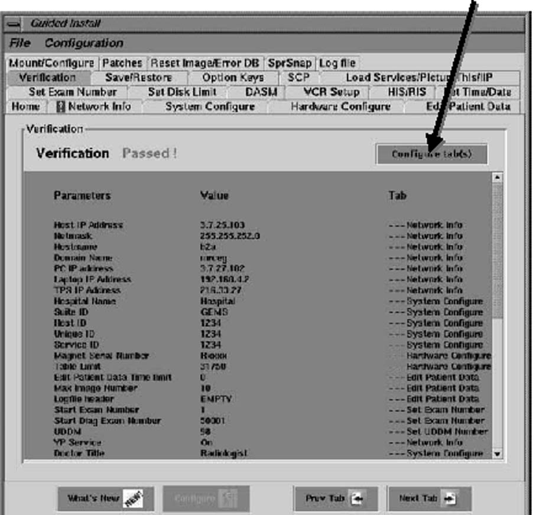

Operating Documentation
Direction 5133330-3, Rev# 14
Signa EXCITE HD 3.0T Service Methods
Module Version 1.0, Version Date 5/15/07
Operating Documentation |
| Required Persons | Preliminary Reqs | Procedure | Finalization |
|---|---|---|---|
| 1 | 30 mins |
If this is a new/upgraded Signa installation or if the system just needs to be re-configured between software loads, do the following to start the Configuration GUI:
With Signa up and running, go to the service desktop and push the <Install> button on the toolbar. A C-Shell will open and ask for root password (“operator” <Enter> is the default). The Install GUI will load and start.
Help documentation is built into the GUI. Push the <Help> button on the tab you need information for in the GUI. Push the [Next] button to move through tabs in order. Modify entries to match your system as required. When satisfied, push the [Configure] button at the bottom of the tab page or wait until all tabs have been modified and go to the “Verification” tab. Review changes made are correct, then push the <Configure Tab(s)> button to update the system (see Illustration 1).
Illustration 1: VERIFICATION MENU - CONFIGURE TABS

Before exiting the GUI, insert the SaveInfo MOD or new MOD into the drive. Go to the top left corner of the Install GUI and select [File] and then [Save GI Configuration to MOD]. This process does not create a SaveInfo disk. It just creates a copy of the information already entered in the GUI tabs for use in the next software install.
Exit the install GUI by selecting [File] then [Quit]. If any error conditions still exist, you will be warned that no changes will be made before exiting.
| NOTE: | The GUI will not automatically reboot the system in configure mode. It will be up to the user to reboot after making configurations. |
If changes were made to the system configuration, select [System Shutdown] and reboot the systems for changes to take effect.
No finalization steps.